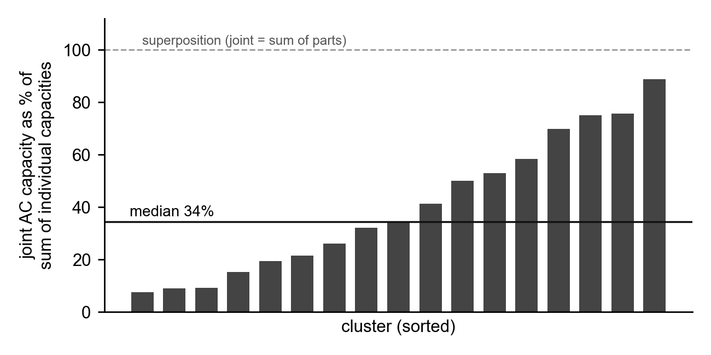
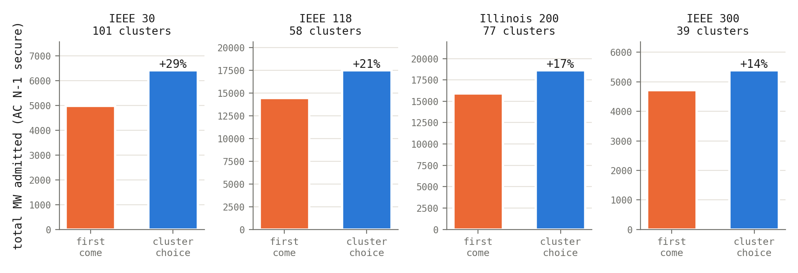

Deciding what connects to the power grid, project by project and as a whole.
New solar farms, batteries and data centers wait years to connect, and most never do. Certified Interconnection is an open-source study engine that tells each project, and the whole cluster asking at the same time, how much the grid can take under every outage and season the operator checks, what the fastest and cheapest way to make room is, and who should pay. Every fast answer comes with a guarantee, or it goes to the full engineering study.
Led by Sehaj Randhir Singh. Built on Power Grid Model and designed to check grid AI models like OpenGridFM.

Before anything connects, the grid operator has to check that the grid stays safe if any line fails, in every season, together with every other project asking at the same time. That's the interconnection study. It takes years, done one phase at a time, and since FERC Order 2023 operators like PJM study requests in clusters, because projects that fit alone can overload the grid together.
From PJM's own public queue file, which we cleaned and published:

Six layers. Physics and the guarantees are exact and hard-coded; AI only predicts, ranks and searches, and never makes a "safe" call on its own.
Outages cut each project's room roughly in half, and clusters interfere
Each project alone and the cluster together, checked with full AC power flow under every single-line outage, on four public test grids:
| Grid | Clusters | Project capacity lost to outages (median) | Cluster vs sum of its parts (median) | Clusters with a project that fits only next to a partner |
|---|---|---|---|---|
| IEEE 30-bus | 101 | 59% | 50% | 54% |
| IEEE 118-bus | 58 | 54% | 47% | 22% |
| Illinois 200-bus | 77 | 50% | 55% | 32% |
| IEEE 300-bus | 39 | 46% | 35% | 3% |

Deciding as a cluster admits 14 to 29% more, but you can't tell in advance which clusters gain
Same clusters, every answer checked with AC N-1. "Cluster choice" keeps the better of two cluster-wide picks (AC greedy and the linear pick with AC repair); "first come" admits requests one by one in a random queue order.

The physics core at scale
grid-engine runs every outage set as one Power Grid Model batch, in three seasons. On the 2,000-bus synthetic Texas grid:
When does today's linear shortcut hold?
PJM's published optimization picks the most MW that needs no upgrades with a linear model, then checks with full AC power flow. We checked those picks ourselves:
| Setting | Linear pick secure under AC N-1 |
|---|---|
| Projects sized near each bus's limit, four grids | 31% to 39% |
| Real PJM project sizes, synthetic 500-bus grid | 44 of 49 (90%) |
| Real PJM project sizes, synthetic 2,000-bus Texas grid | 16 of 20 (80%), admitting 220 of 1,669 MW requested |
Trusting grid AI
On IBM and Hydro-Québec's GENCO grid foundation model (synthetic Texas 2,000-bus, 989 outage cases), our check certified 609 answers and passed no wrong one, and starting the exact solver from the model's prediction halved the work (median 2 Newton iterations instead of 4).
Honest limits
- Everything above is on public test and synthetic grids. Real utility network models are restricted (critical-infrastructure data), so full validation on a real network needs a utility or ISO partner.
- Contingency sets (single outages, common-tower pairs, sampled double outages) and the three seasons use our own stated definitions, not any operator's study files. Generator reactive limits, short circuit and dynamics are not in yet.
- Cost and time for each option will come from public data and will be shown as ranges, not point estimates. Approvals and permitting are human decisions; the engine can flag them, not predict them.
- The learned certified screen does not yet beat simply scaling the linear answer down; the guarantee layer is being rebuilt to hold for optimizer-chosen clusters.
Every generation request in PJM's public queue, cleaned, with the completion, withdrawal and crowding statistics above.
Physics core on Power Grid Model: MATPOWER cases, three seasons, P1 / P7 / double-outage sets, batch AC security, and the capacity layer: how much each bus, project and cluster can take, what binds, and the exact best cluster decision. Tested against pandapower (voltages agree to 1e-6 pu).
Learned AC corrections, the cluster-selection reproduction (matches brute force exactly) and the certify-or-defer guarantee.
Each project's value alone and in the cluster, who helps or crowds whom, fair cost shares and withdrawal sensitivity.
IEEE 118-bus validation case contributed to Power Grid Model, plus warm-start benchmarks on #1609, re-run on the maintainers' experimental branch (scripts).
- Physics core: seasons, single, breaker and common-tower outages, short circuit and grid strength on Power Grid Model.
- Individual and cluster values on the 2,000-bus grid with real PJM project sizes.
- Ways to make room: network switching, flexible load and storage, connection order, and the MW each one unlocks.
- Cost and time ranges from public PJM upgrade costs and LBNL timelines, with sensitivity analysis.
- Guarantees everywhere: certificates that hold for the clusters the optimizer picks, plus a random audit.
- Fair cost sharing that survives withdrawals without a full restudy.
- Risk: double outages and a cascading screen.
- Product: a package and web demo, reviewed by planning engineers.
- Real networks through a utility or ISO partner, for a full, published validation.